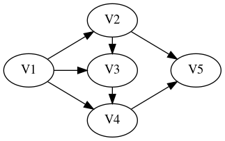

Midterm Project 2 -- ``PageRank``
Instructions
There are 6 questions contained in the presentation below. You should
submit to gradescope a report as a PDF file containing responses
to those questions, written in the style of a lab report: you should
write in such a manner that a reader who didn’t know the assignment in
advance could read and follow your response.
In some cases, you are asked to write python code. You should
include the text of the code embedded in your submission.
(And: You don’t have to include any discussion on the for-fun section at the end…)
PageRank
Markov chains formed the original basis for the PageRank algorithm used by Google to rank web-pages by “importance”.
Consider the following basic model of surfing the web. A user begins
surfing at a particular website. From the set of outgoing links from
this site, a choice is made, with each link given equal
probability. This transition brings the user to a new page, where the
process is repeated. Let’s model this system as a Markov Chain: the
nodes in our transition diagram correspond to a certain collection of
websites, and there is a directed edge from node A to node B
if site A contains a hyperlink to the site B. Consider a fixed
node A: to assign the probabilities on edges A \(\to\) B we
just need to count the number N(A) of outgoing links from site
A; then all edges A \(\to\) B will be given probability
1/N(A).
Number the nodes \(a_0,\dots,a_{n-1}\) and write \(\mathbf{e}_i\) for the standard basis vectors. \(0 \le i \le n-1\). We wish to define the adjacency matrix \(A\). It should have the property that \(A\mathbf{e}_i\) is the sum of all the standard basis vectors \(\mathbf{e}_j\) for which there is an edge \(a_i \to a_j\). A little thought shows that the \(s,t\) entry satisfies \[A_{s,t} = \left\{\begin{matrix} 1 & \text{if there is an edge $a_t \to a_s$} \\ 0 & \text{otherwise}\end{matrix} \right.\]
Using \(A\), one can create the “naive” transition matrix \(T\) whose entries are the probabilities discussed above: as in the course notebooks, one views the directed graph as the transition diagram of a probabilistic finite-state machine, and \(T\) is the associated transition matrix.
Suppose the sites we consider were described by the following directed graph:

Treating this naively, we obtain the following adjacency matrix and “naive” transition matrix:
\[A=\begin{bmatrix} 0 & 0 & 0 & 0 & 0 \\ 1 & 0 & 0 & 0 & 0 \\ 1 & 1 & 0 & 0 & 0 \\ 1 & 0 & 1 & 0 & 0 \\ 0 & 1 & 0 & 1 & 0 \\ \end{bmatrix} \quad \text{and} \quad T=\begin{bmatrix} 0 & 0 & 0 & 0 & 0 \\ 1/3 & 0 & 0 & 0 & 0 \\ 1/3 & 1/2 & 0 & 0 & 0 \\ 1/3 & 0 & 1 & 0 & 0 \\ 0 & 1/2 & 0 & 1 & 0 \\ \end{bmatrix}\]
Notice that V5 is a sink - there are no outgoing edges (the site
V5 has no links to any of the sites under consideration). This is
problematic – the transition diagram we obtain isn’t strongly connected and the corresponding transition matrix isn’t stochastic
(the entries in the last column don’t sum to 1).
Now, the model is supposed to represent a random web-surfer, so to recover a stochastic matrix, we model the transition from a sink node – i.e. a node with no “out-connections” – by having the surfer randomly choose a site (i.e. a node) from all sites with equal probability.
In the example, this corresponds to replacing the final column of \(T\) by the column \[\dfrac{1}{5}\begin{bmatrix} 1 & 1 & 1 & 1 & 1 \end{bmatrix}^T\]
The matrix \(T_1\) obtained in this manner is stochastic, though it may well not satisfy the conclusion of the Perron-Frobenius Theorem.
We now introduce a damping factor:
The PageRank theory holds that an imaginary surfer who is randomly clicking on links will eventually stop clicking. The probability, at any step, that the person will stop is a damping factor p.
We model this by declaring that with probability p the imaginary
surfer will “stop clicking”. The transition that occurs in this case
lands the surfer on a new node chosen at random from all available
nodes (with equal probability).
For the example, for the above diagram, we obtain the matrix
\[C = (1-p) T_1 + \dfrac{p}{5} \begin{bmatrix} 1 & 1 & 1 & 1 & 1 \\ 1 & 1 & 1 & 1 & 1 \\ 1 & 1 & 1 & 1 & 1 \\ 1 & 1 & 1 & 1 & 1 \\ 1 & 1 & 1 & 1 & 1 \end{bmatrix}\]
which we call the PageRank transition matrix for the damping
probability \(p\).
Given an adjacency matrix \(A\), complete the following description of the
i,jentry of the correspondingPageRanktransition matrix \(C\) for the probability \(p\).If the
j-th column of the matrix \(A\) is equal to \(\mathbf{0}\), then for eachi=0,...,n-1:\(C_{i,j} =\) _______________
Suppose that the sum of the entries of the
j-th column of the matrix \(A\) is equal to \(s>0\), then for eachi=0,...,n-1:If \(A_{i,j} = 0\), then \(C_{i,j} =\) ______________
If \(A_{i,j} = 1\), then \(C_{i,j} =\) ______________
Use your description in 1. to write a
pythonfunction to create thePageRanktransition matrix from an adjacency matrix \(A\).Here is a suggested starting point:
import numpy as np def make_transition(A,p): (n,m) = A.shape if n==m: C = np.zeros((n,n)) ## create a matrix of # ## zeros of the correct size # # ## insert code to modify # ## the entries C[i,j] # return C
Recall that you can obtain the sum of the entries of the
ith column of the matrixAusing the following:s=np.ones(n) @ A[:,i]And you can test whether the
ith column ofAis equal to the zero-vector using(A[:,i] == 0).all(); this expression will beTrueif all entries in theith column are equal to 0.You can use this expression in a conditional statement:
if (A[:,i] == 0).all() then ## do something...I recommend that you build up the matrix
Cby assigning values to the entries one column at a time, by using a loop as follows:for j in range(n): ## insert code to assign values for the j-th column...You can assign the value of
Cin theith row andjth column using an expression likeC[i,j] = ...
Test your code on the example above, as follows:
>>> float_formatter = "{:.5f}".format >>> np.set_printoptions(formatter={'float_kind':float_formatter}) >>> A = np.array([[ 0, 0, 0, 0, 0 ], [ 1, 0, 0, 0, 0 ], [ 1, 1, 0, 0, 0 ], [ 1, 0, 1, 0, 0 ], [ 0, 1, 0, 1, 0 ]]) >>> ## you should see the following output >>> make_transition(A,p=0.8) array([[0.16000, 0.16000, 0.16000, 0.16000, 0.20000], [0.22667, 0.16000, 0.16000, 0.16000, 0.20000], [0.22667, 0.26000, 0.16000, 0.16000, 0.20000], [0.22667, 0.16000, 0.36000, 0.16000, 0.20000], [0.16000, 0.26000, 0.16000, 0.36000, 0.20000]])
Find a 1-eigenvector for the
PageRanktransition matrixCwhenp=.8and whenp=.4for the directed graphBe sure to normalize your eigenvector to obtain probability vectors.
Explain what the entries in this vector predict about the probability of a random surfer landing on one of the five web-sites corresponding to the nodes in the diagram.
Compare the information you get from the eigenvector with that obtained by studying powers of
Ccalculated usingnp.linalg.matrix_power(C,m).
Remark: PageRank uses the long-term probability as a proxy
for the importance of the page – the probability with which a random
surfer lands on a page in the long-run determines its ranking.
The following diagram describes the same nodes as in problem 2., but includes some additional edges (i.e. links).

Assess the impact of the additional edges on the page rankings (when
p=.8and whenp=.4) – i.e. compare the ranking obtained for this diagram with that obtained in problem 2. Before making your comparison, you’ll need to first compute the adjacency matrix for this new configuration, and then use your code to find the correspondingPageRanktransition matrix.For any directed graph, explain why the corresponding
PageRanktransition matrix forp>0is a stochastic matrix corresponding to a strongly connected aperiodic transition diagram. In particular, explain why the conclusion of the Perron-Frobenius Theorem holds for this matrix.The following code can be used to extract formatted data (
json) from a file. The parameter to the function is a file name; thisjsonfile should contain data like[ { "from": "Blue Whale", "to": "Snail" }, { "from": "Blue Whale", "to": "Alligator" }, ... ](Here we view these animal names as “sites”; a
from/topair indicates a link.)and the return value is a pair
(sites,A)wheresitesis a list of strings containing the name of each “site” that appears in one of thefrom/topairs, andAis the adjacency matrix determined by the indicated links.
import json import numpy as np float_formatter = "{:.5f}".format np.set_printoptions(formatter={'float_kind':float_formatter}) def bv(it,items): return np.array([1.0 if i == items.index(it) else 0.0 for i in range(len(items))]) ## >>> bv("c",["a","b","c","d"]) ## array([0.00000, 0.00000, 1.00000, 0.00000]) def adj_from_json(json_file): with open(json_file) as f: adj_data = json.load(f) dict = {} for i in adj_data: lfrom = i['from'] lto = i['to'] if lfrom in dict.keys(): dict[lfrom].add(lto) else: dict[lfrom] = set() dict[lfrom].add(lto) if not(lto in dict.keys()): dict[lto] = set() sites = list(dict.keys()) A = np.array([sum([bv(l_to,sites) for l_to in dict[l_from]], np.zeros(len(sites))) for l_from in sites]) return (sites, A)
Now, here is a file some data from which you should build an adjacency matrix using
adj_from_json:To use this file, follow these instructions:
Local computer instructions
If you use
pythonon your local computer, save this file to your drive and runpythonfrom a shell in the same directory. You can then call(ll,A) = adj_from_json("data.json")
ColabinstructionsIf you use
colab, proceed as follows. Save the filedata.jsonto your local computer, and then upload that file to yourgoogle drive.To enable
colabto see yourgoogle drive, execute the following commands in acell:from google.colab import drive drive.mount('/gdrive')Now change to the correct directory in your
google driveby executing the following in acellincolab(you do need the%symbol):%cd /gdrive/My\ Drive/Now you can run
(ll,A) = adj_from_json("data.json"):in a
colab cell.
Once you have produced the adjacency matrix
Afromdata.json, use themake_transitionfunction you wrote in the previous exercises to build thePageRanktransition matrixCfrom the adjacency matrixA, forp=0.8Now find the page-rankings of these
pages, using both the eigenvector method and the power-iteration method. For each method, report the top ten “sites” by name (whenp=0.8). When using the power-iteration method, report the number of iterations used.Note that you can get the site name corresponding to index
ias folows. If you used(ll,A) = adj_from_json("data.json")to build the adjacency matrix then the listllcontains the names, and in particularll[i]is the name for indexi.What happens if you reduce the value of
p? How much must you varypto see any change in the “top-ten” list?The damping probability
0 < p ≤ 1forces thePageRanktransition matrix to satisfy the conclusion of the Perron-Frobenius Theorem. As we discussed above, from the point-of-view of ranking web pages this quantity represents the probability that a random web-surfer gets bored and makes a random new choice of sites. In particular, this provides a reasonable self-contained explanation for the use of thisPageRanktransition matrix.On the other hand, one might hope to use the
PageRankapproach to rank other “linked material”. For example, one might try to rank published academic papers by citation.More precisely: given a collection of academic papers, consider a directed graph whose nodes are the papers and for which there is a directed edge from paper A to paper B if paper A contains a citation to paper B.
Suppose that each paper in the collection has at least one citation to another paper in the collection; under this assumption, the “naive” transition matrix \(T\) is stochastic. But this transition matrix may fail to satisfy the conclusion of the Perron-Frobenius Theorem. One can “fix” this problem as before by introducing a “damping probability” \(0 < p \le 1\) – i.e. by replacing \(T\) with the matrix
\[(1-p) T + ̣\dfrac{p}{N}\mathbf{1}^{N \times N}\]
where \(N\) is the number of papers in the collection and \(\mathbf{1}^{N \times N}\) denotes the \(N \times N\) matrix all of whose entries are equal to 1.
Do you think this is a reasonable proposal? What would be the explanation for the damping probability from the point-of-view of the model?
For Fun:
Here is some code for performing a web-crawl:
It contains a function
def crawl(start_url,
save_file,
n,
verbose=True,
follow_relative_links=True,
max_links_per_page=float('inf'),
blacklist=[],
whitelist=[]):which when invoked will “scrape/crawl” the web, beginning at
start_url. It finds all links in this first site, and then
proceeds to recursively follow these links. The parameter n is the
number of pages to include in the adjacency data to be reported
(roughly speaking, the recursive search can stop once n pages have
been found).
For example, you could try something like
crawl("https://www.comap.com/contests/mcm-icm","comap.txt",500)When finished, this function will output a json file with name
save_file. This file will contain from/to pairs for links
found in the search.
You can then use the above function adj_from_json to build an
adjacency matrix from the links in the file built by crawl.
In turn, you can build the PageRank transition matrix from this
adjacency matrix, and use either the eigenvalue method or the
iteration method to rank the pages that you have considered.
There are a number of comments in the code for crawl that are
worth reading if you want to play with this code…